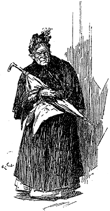

Our morning's exertions had been too much for my weak health, and I was tired out in the afternoon. After Holmes' departure for the concert, I lay down upon the sofa and endeavoured to get a couple of hours' sleep. It was a useless attempt. My mind had been too much excited by all that had occurred, and the strangest fancies and surmises crowded into it. Every time that I closed my eyes I saw before me the distorted baboon-like countenance of the murdered man. So sinister was the impression which that face had produced upon me that I found it difficult to feel anything but gratitude for him who had removed its owner from the world. If ever human features bespoke vice of the most malignant type, they were certainly those of Enoch J. Drebber, of Cleveland. Still I recognized that justice must be done, and that the depravity of the victim was no condonement in the eyes of the law.
The more I thought of it the more extraordinary did my companion's hypothesis, that the man had been poisoned, appear. I remembered how he had sniffed his lips, and had no doubt that he had detected something which had given rise to the idea. Then, again, if not poison, what had caused the man's death, since there was neither wound nor marks of strangulation? But on the other hand, whose blood was that which lay so thickly upon the floor? There were no signs of a struggle, nor had the victim any weapon with which he might have wounded an antagonist. As long as all these questions were unsolved, I felt that sleep would be no easy matter, either for Holmes or myself. His quiet, self-confident manner convinced me that he had already formed a theory which explained all the facts, though what it was I could not for an instant conjecture.
He was very late in returning—so late that I knew that the concert could not have detained him all the time. Dinner was on the table before he appeared.
"It was magnificent," he said, as he took his seat. "Do you remember what Darwin says about music? He claims that the power of producing and appreciating it existed among the human race long before the power of speech was arrived at. Perhaps that is why we are so subtly influenced by it. There are vague memories in our souls of those misty centuries when the world was in its childhood."
"That's rather a broad idea," I remarked.
"One's ideas must be as broad as Nature if they are to interpret Nature," he answered. "What's the matter? You're not looking quite yourself. This Brixton Road affair has upset you."
"To tell the truth, it has," I said. "I ought to be more case-hardened after my Afghan experiences. I saw my own comrades hacked to pieces at Maiwand without losing my nerve."
"I can understand. There is a mystery about this which stimulates the imagination; where there is no imagination there is no horror. Have you seen the evening paper?"
"No."
"It gives a fairly good account of the affair. It does not mention the fact that when the man was raised up a woman's wedding ring fell upon the floor. It is just as well it does not."
"Why?"
"Look at this advertisement," he answered. "I had one sent to every paper this morning immediately after the affair."
He threw the paper across to me and I glanced at the place indicated. It was the first announcement in the "Found" column. "In Brixton Road, this morning," it ran, "a plain gold wedding ring, found in the roadway between the White Hart Tavern and Holland Grove. Apply Dr. Watson, 221B, Baker Street, between eight and nine this evening."
"Excuse my using your name," he said. "If I used my own, some of those dunderheads would recognize it, and want to meddle in the affair."
"That is all right," I answered. "But supposing any one applies, I have no ring."
"Oh yes, you have," said he, handing me one. "This will do very well. It is almost a facsimile."
"And who do you expect will answer this advertisement?"
"Why, the man in the brown coat—our florid friend with the square toes. If he does not come himself, he will send an accomplice."
"Would he not consider it as too dangerous?"
"Not at all. If my view of the case is correct, and I have every reason to believe that it is, this man would rather risk anything than lose the ring. According to my notion he dropped it while stooping over Drebber's body, and did not miss it at the time. After leaving the house he discovered his loss and hurried back, but found the police already in possession, owing to his own folly in leaving the candle burning. He had to pretend to be drunk in order to allay the suspicions which might have been aroused by his appearance at the gate. Now put yourself in that man's place. On thinking the matter over, it must have occurred to him that it was possible that he had lost the ring in the road after leaving the house. What would he do then? He would eagerly look out for the evening papers in the hope of seeing it among the articles found. His eye, of course, would light upon this. He would be overjoyed. Why should he fear a trap? There would be no reason in his eyes why the finding of the ring should be connected with the murder. He would come. He will come. You shall see him within an hour?"
"And then?" I asked.
"Oh, you can leave me to deal with him then. Have you any arms?"
"I have my old service revolver and a few cartridges."
"You had better clean it and load it. He will be a desperate man; and though I shall take him unawares, it is as well to be ready for anything."
I went to my bedroom and followed his advice. When I returned with the pistol, the table had been cleared, and Holmes was engaged in his favourite occupation of scraping upon his violin.
"The plot thickens," he said, as I entered; "I have just had an answer to my American telegram. My view of the case is the correct one."
"And that is?" I asked eagerly.
"My fiddle would be the better for new strings," he remarked. "Put your pistol in your pocket. When the fellow comes, speak to him in an ordinary way. Leave the rest to me. Don't frighten him by looking at him too hard."
"It is eight o'clock now," I said, glancing at my watch.
"Yes. He will probably be here in a few minutes. Open the door slightly. That will do. Now put the key on the inside. Thank you! This is a queer old book I picked up at a stall yesterday—De Jure inter Gentes—published in Latin at Liege in the Lowlands, in 1642. Charles's head was still firm on his shoulders when this little brown-backed volume was struck off."
"Who is the printer?"
"Philippe de Croy, whoever he may have been. On the fly-leaf, in very faded ink, is written 'Ex-libris Guliolmi Whyte.' I wonder who William Whyte was. Some pragmatical seventeenth century lawyer, I suppose. His writing has a legal twist about it. Here comes our man, I think."
As he spoke there was a sharp ring at the bell. Sherlock Holmes rose softly and moved his chair in the direction of the door. We heard the servant pass along the hall, and the sharp click of the latch as she opened it.
"Does Dr. Watson live here?" asked a clear but rather harsh voice. We could not hear the servant's reply, but the door closed, and some one began to ascend the stairs. The footfall was an uncertain and shuffling one. A look of surprise passed over the face of my companion as he listened to it. It came slowly along the passage, and there was a feeble tap at the door:
"Come in," I cried.
At my summons, instead of the man of violence whom we expected, a very old and wrinkled woman hobbled into the apartment. She appeared to be dazzled by the sudden blaze of light, and after dropping a curtsey, she stood blinking at us with her bleared eyes and fumbling in her pocket with nervous, shaky fingers. I glanced at my companion, and his face had assumed such a disconsolate expression that it was all I could do to keep my countenance.
The old crone drew out an evening paper, and pointed at our advertisement. "It's this as has brought me, good gentlemen," she said, dropping another curtsey; "a gold wedding ring in the Brixton Road. It belongs to my girl Sally, as was married only this time twelvemonth, which her husband is steward aboard a Union boat, and what he'd say if he come 'ome and found her without her ring is more than I can think, he being short enough at the best of times, but more especially when he has the drink. If it pleases you, she went to the circus last night along with——"
"Is that her ring?" I asked.
"The Lord be thanked!" cried the old woman; "Sally will be a glad woman this night: That's the ring."
"And what may your address be?" I inquired; taking up a pencil.
"13, Duncan Street, Houndsditch. A weary way from here."
"The Brixton Road does not lie between any circus and Houndsditch," said Sherlock Holmes sharply.
The old woman faced round and looked keenly at him from her little red-rimmed eyes. "The gentleman asked me for my address," she said. "Sally lives in lodgings at 3, Mayfield Place, Peckham."
"And your name is——?"
"My name is Sawyer—hers is Dennis, which Tom Dennis married her—and a smart, clean lad, too, as long as he's at sea, and no steward in the company more thought of; but when on shore, what with the women and what with liquor shops——"
"Here is your ring, Mrs. Sawyer," I interrupted, in obedience to a sign from my companion; "it clearly belongs to your daughter, and I am glad to be able to restore it to the rightful owner."
With many mumbled blessings and protestations of gratitude the old crone packed it away in her pocket, and shuffled off down the stairs. Sherlock Holmes sprang to his feet the moment that she was gone and rushed into his room. He returned in a few seconds enveloped in an ulster and a cravat. "I'll follow her," he said, hurriedly; "she must be an accomplice, and will lead me to him. Wait up for me." The hall door had hardly slammed behind our visitor before Holmes had descended the stair. Looking through the window I could see her walking feebly along the other side while her pursuer dogged her some little distance behind. "Either his whole theory is incorrect," I thought to myself," or else he will be led now to the heart of the mystery." There was no need for him to ask me to wait up for him, for I felt that sleep was impossible until I heard the result of his adventure.
It was close upon nine when he set out. I had no idea how long he might be, but I sat stolidly puffing at my pipe and skipping over the pages of Henri Murger's Vie de Bohème. Ten o'clock passed, and I heard the footsteps of the maid as they pattered off to bed. Eleven, and the more stately tread of the landlady passed my door, bound for the same destination. It was close upon twelve before I heard the sharp sound of his latch-key. The instant he entered I saw by his face that he had not been successful. Amusement and chagrin seemed to be struggling for the mastery, until the former suddenly carried the day, and he burst into a hearty laugh.
"I wouldn't have the Scotland Yarders know it for the world," he cried dropping into his chair; "I have chaffed them so much that they would never have let me hear the end of it. I can afford to laugh, because I know that I will be even with them in the long run."
"What is it then?" I asked.
"Oh, I don't mind telling a story against myself. That creature had gone a little way when she began to limp and show every sign of being foot-sore. Presently she came to a halt, and hailed a four-wheeler which was passing. I managed to be close to her so as to hear the address, but I need not have been so anxious, for she sang it out loud enough to be heard at the other side of the street, 'Drive to 13, Duncan Street, Houndsditch,' she cried. This begins to look genuine, I thought, and having seen her safely inside, I perched myself behind. That's an art which every detective should be an expert at. Well, away we rattled, and never drew rein until we reached the street in question. I hopped off before we came to the door, and strolled down the street in an easy lounging way. I saw the cab pull up. The driver jumped down, and I saw him open the door and stand expectantly. Nothing came out though. When I reached him, he was groping about frantically in the empty cab, and giving vent to the finest assorted collection of oaths that ever I listened to. There was no sign or trace of his passenger, and I fear it will be some time before he gets his fare. On inquiring at Number 13 we found that the house belonged to a respectable paperhanger, named Keswick, and that no one of the name either of Sawyer or Dennis had ever been heard of there."
"You don't mean to say," I cried, in amazement, "that that tottering, feeble old woman was able to get out of the cab while it was in motion, without either you or the driver seeing her?"
"Old woman be damned!" said Sherlock Holmes, sharply. "We were the old women to be so taken in. It must have been a young man, and an active one, too, besides being an incomparable actor. The get-up was inimitable. He saw that he was followed, no doubt, and used this means of giving me the slip. It shows that the man we are after is not as lonely as I imagined he was, but has friends who are ready to risk something for him. Now, Doctor, you are looking done-up. Take my advice and turn in."
I was certainly feeling very weary, so I obeyed his injunction. I left Holmes seated in front of the smouldering fire, and long into the watches of the night I heard the low, melancholy wailings of his violin, and knew that he was still pondering over the strange problem which he had set himself to unravel.